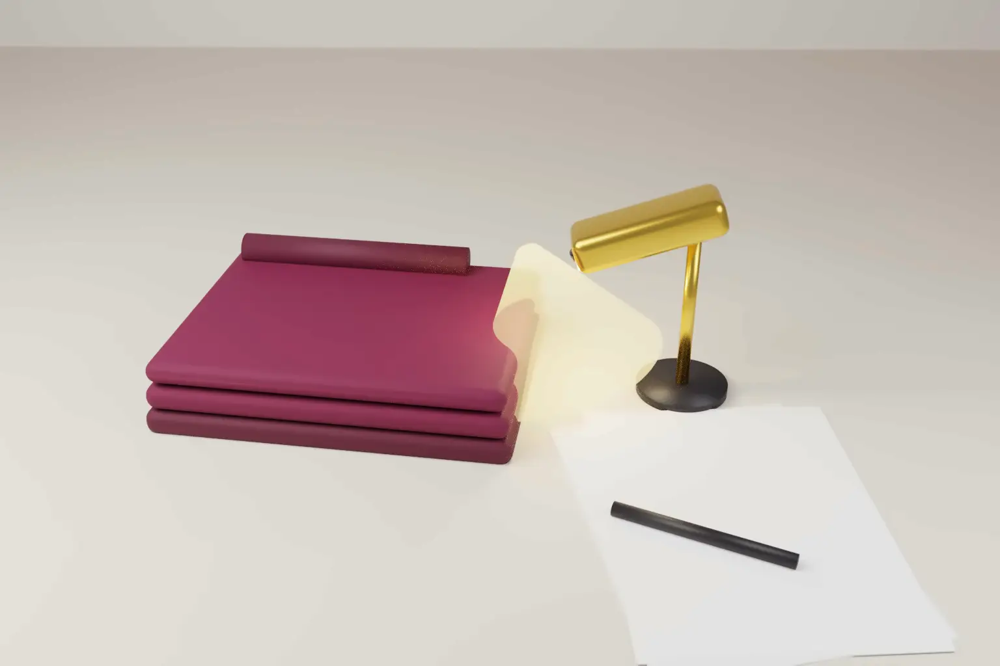

Inventive step objections in India often rest on several prior art documents read together. On 16 October 2026 the Madras High Court allowed an appeal by The North Face Apparel Corp against such a refusal. The court held that the refusal was built on hindsight.
The case is The North Face Apparel Corp v Controller of Patents and Designs, CMA(PT) No. 22 of 2025. Justice K. Kumaresh Babu heard it as an appeal under section 117A of the Patents Act, 1970. The court did not send the case back for a fresh hearing. It directed the Controller to grant the patent.
- The application was 202147026139, titled "Systems and Methods for End-to-End Article Management".
- The Controller refused it on 16 April 2025 for lack of inventive step over four documents, D21 to D24.
- The court found that the Controller had dissected the claim and assessed features in isolation.
- It held that the cited documents could not be put together as a hindsight reconstruction of the invention.
- The court set the refusal aside and directed grant, with no order as to costs.
The invention and the refusal
The application concerns tracking garments and other articles through manufacturing and supply. As the applicant described it, invisible markers on an article are read by a spectrophotometer to identify it. The process gives traceability and detects production discrepancies against intended design parameters.
The applicant replied to the first examination report on 31 May 2022 and amended its claims. After three hearing notices, the Controller refused the application. The refusal relied on four documents.
- D21 described automation for custom fit garments. The Patent Office admitted before the court that its objectives are entirely different.
- D22 used optically readable codes, not invisible markers, as the Patent Office conceded.
- D23 described a centralised command and control system with an end to end architecture.
- D24 described carrying process information from one stage to the next.
The Controller found that a person skilled in the art would combine these teachings and arrive at the claimed invention.
What the court decided
The claim must be read as a whole
The court found that the Controller had dissected the claim. Each feature was matched to a different document, and the combination as claimed was not assessed. This is a common pattern in Indian refusals. It produces a result that looks reasoned but never asks whether the whole invention was obvious.
Mosaicing and hindsight
The court described the Patent Office's case as a mosaic of the cited documents. It held that the argument for combining them was not well founded. The Patent Office conceded that D21 and D23 pursue different objectives.
The court said the teachings of the cited documents cannot be put as a hindsight reconstruction for the claimed invention. It also held that using a spectrophotometer to read invisible markers and identify garments is essentially an inventive step. It referred to technical advance and economic significance. These are the two limbs of the definition of inventive step in section 2(1)(ja), although the judgment does not cite the section by number.
Grant rather than remand
The order matters as much as the reasoning. When a High Court finds a refusal flawed, it often sends the case back to a different Controller for a fresh hearing. Here the court directed grant. That saves the applicant years of further prosecution.
Where the judgment sits in Indian law
Section 2(1)(ja) defines inventive step. The invention must involve a technical advance over existing knowledge, or have economic significance, or both. It must also not be obvious to a person skilled in the art.
A Division Bench of the Delhi High Court set out a five step test in Hoffmann-La Roche v Cipla (2015). The tribunal identifies the skilled person, the inventive concept and the common general knowledge. It then identifies the differences between the prior art and the invention. Finally it asks whether those differences would be obvious to the skilled person without knowledge of the invention.
Courts have also required Controllers to explain their reasoning. In Agriboard International v Deputy Controller (2022), the Delhi High Court said a refusal must analyse the prior art and the invention. It must explain how the invention would be obvious to a skilled person. It must also deal with the applicant's reply. The former Intellectual Property Appellate Board warned against hindsight in Enercon v Aloys Wobben (2013).
The North Face judgment does not cite these cases. But it applies the same ideas. A list of documents is not a reason. The Controller must explain why the skilled person would combine them.
The Manual of Patent Office Practice and Procedure does allow a mosaic of prior art in some cases. Combining documents is not wrong in itself. The question is whether the skilled person would have had a reason to combine them, without knowing the invention.
How Europe, the US and the UK handle the same question
- European Patent Office. The EPO uses the problem and solution approach. It identifies the closest prior art and the objective technical problem. It then asks whether the skilled person would, not merely could, have arrived at the invention. A second document may be combined only if the skilled person would have had a reason to do so.
- United States. Graham v John Deere (1966) sets the framework for obviousness under 35 U.S.C. section 103. KSR v Teleflex (2007) rejected a rigid demand for an express teaching to combine. But the Supreme Court also warned against hindsight bias. Examiners must still give a reason why a skilled person would combine the references.
- United Kingdom. Courts use the Windsurfing test as restated in Pozzoli v BDMO (2007). They identify the skilled person and the inventive concept, and then the differences from the prior art. They then ask whether those differences would be obvious without knowledge of the invention. Combining documents is permitted only where the skilled person would likely consider them together.
The common thread is clear. Every system allows prior art to be combined. None allows the invention itself to supply the reason for combining it. India's five step test closely tracks the UK test. The North Face reasoning is consistent with the EPO's would rather than could standard.
Practical steps for applicants
- When replying to an examination report, challenge any objection that cites several documents without a reason to combine them.
- Show what each cited document is trying to achieve. If their purposes differ, say so with references to the text.
- Identify the inventive concept of the claim as a whole. Do not argue feature by feature on the examiner's terms.
- Put the technical advance and any economic significance on record. Both are part of the statutory test.
- At the hearing, ask the Controller to address each point of your reply. A refusal that ignores them is open to appeal.
- Consider an appeal under section 117A where the refusal rests on a mosaic. Courts now direct grant in clear cases.
Our patent services include examination report replies, hearings and appeals. For drafting claims that survive these objections, see our note on drafting patent claims for commercial value. Our step by step guide to filing a patent in India shows where examination fits in the process.
Frequently asked questions
What is mosaicing of prior art?
It is combining several prior art documents to show that an invention is obvious. It is allowed only where the skilled person would have had a reason to combine them without knowing the invention.
Can a High Court direct the Patent Office to grant a patent?
Yes. In an appeal under section 117A the court may set aside a refusal and direct grant. In North Face the Madras High Court did so instead of remanding the case.
What does inventive step mean under Indian patent law?
Under section 2(1)(ja), the invention must involve a technical advance or have economic significance, or both. It must also not be obvious to a person skilled in the art.